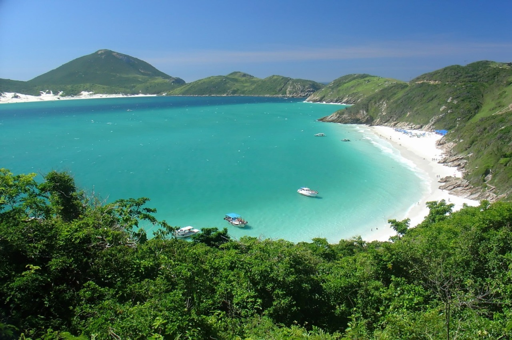

Norte
-
Paraíso do ecoturismo e das águas cristalinas, a Chapada Diamantina na Bahia se destaca. Além de cidades pequenas com um agito meio-histórico existem várias cachoeiras, cavernas, trilhas, sítios históricos e mirantes.
Nordeste
Paraíso do ecoturismo e das águas cristalinas, a Chapada Diamantina na Bahia se destaca. Além de cidades pequenas com um agito meio-histórico, meio-cultural. São 33 cachoeiras, 2 cavernas, 16 sítios históricos, trilhas e mirantes incríveis.

A pequena vila cearense Jericoacara é um primor: rústica e ao mesmo tempo sofisticada, seus inúmeros restaurantes pé na área criam um ambiente super romântico e intimista.
Centro-Oeste

Berço da figura nacional José da Silva Xavier, a cidade de Tiradentes em Minas Gerais é repleta de arte barroca e, por isso, considerada um Patrimônio Histórico Nacional.
Sudeste

Campos do Jordão é uma ótima opção principalmente no inverno! É um lugar cercado de montanhas, influenciado pela cultura europeia, cheio de restaurantes e atividades para pessoas de todas as idades.
- 
Arraial do cabo é um lugar paradisíaco. Para se ter uma ideia, até mesmo a placa de boas vindas mostra que o local é um paraíso, a fama de Caribe Brasileiro não é à toa.
Sul
Gramado possui museus, parques, restaurantes e rotas que são exemplos a fazerem desse local um destino muito apropriado tanto para famílias quanto para casais. Entretanto, é claro que o frio é o principal responsável por atrair os turistas.

A cidade de Foz do Iguaçu é conhecida em todo o mundo por sua natureza exuberante. Todos os anos, milhões de turistas desembarcam na cidade para apreciar as belezas naturais, como as impressionantes Cataratas do Iguaçu.